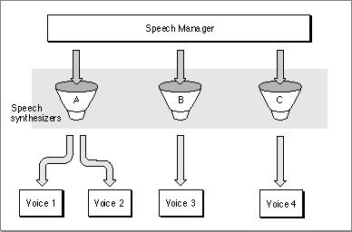

Important: Inside Macintosh: Sound is deprecated as of Mac OS X v10.5. For new audio development in Mac OS X, use Core Audio. See the Audio page in the ADC Reference Library.
Voices
Your application can use the system default voice to generate speech or it can specify that the Speech Manager use a particular voice that is available on the current computer system. A voice is a set of characteristics defined in parameters that specify a particular quality of speech. Just as different people's voices have different tonal qualities, so too can different voices have different qualities. A synthesized voice might sound male or female and might sound like an adult or a child. Some voices sound distinctively synthetic, while others sound more like real people. Figure 4-2 shows how the Speech Manager uses speech channels to synthesize speech with different voices.Figure 4-2 The Speech Manager and multiple voices

As speech-synthesizing technology develops, the voices that your application can access are likely to sound more and more human. Each voice is designed to work with a particular speech synthesizer and can be customized in specific ways to create different effects.
Voices are usually stored in one of three places. The Speech Manager will first look in the application's resources file chain when attempting to locate a voice specification record. Then the Speech Manager will look in the System Folder and then the Extensions folder. Voices stored in the System Folder or Extensions folder are normally available to all applications. Voices stored in the resource fork of an application file are private to that application and will not work if the synthesizers they depend on are not installed on a user's system.
Most of the time, your application designates the voice that speaks text, and usually that is the default voice. Based on the needs of your users and the way in which you expect them to use voices in your application you can provide access to voices in a number of different ways. You could include access to selecting voices in a dialog box that is available from a menu item such as Voices... Any application that allows users to choose among voices requires additional information about the available voices beyond the information provided by a voice specification record (described in detail on page 4-46), whose data should never be presented to the user. Such additional information might include the name of the voice as well as what script and language it supports.
Applications can use the
GetVoiceDescriptionfunction (described in detail on page 4-66) with a voice specification record to obtain such information in a voice description record (described in detail on page 4-47). You might provide access to voices through a control panel. For information about implementing control panels, see Inside Macintosh: More Macintosh Toolbox. Or, you could implement a voices menu in your application's main menu bar, if you think that users will want to change the voice often and you have the room available. It's not a good idea to implement a hierarchical Voices menu since hierarchical menus are harder to use. For more information about choosing a user interface for your application, see Macintosh Human Interface Guidelines.